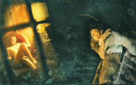

The Forbidden Room

Guy Maddin, Evan Johnson – Kanada 2015
130 min – HD – engl. OF
Sc: Guy Maddin, Evan Johnson – With Charlotte Rampling, Geraldine Chaplin, Udo Kier, Jacques Nolot, Mathieu Amalric – DoP: Stephanie Weber-Biron, Ben Kasulke – E: John Gurdebeke – S: Simon Plouffe, David Rose, John Gurdebeke, Vincent Riendeau, Gavin Fernandes – P: Phoebe Greenberg, Penny Mancuso, Phyllis – S: Arsenal Filminstitut
"THE FORBIDDEN ROOM grew out of Maddin’s interactive 'Seances' project, which resurrected lost films from the silent era by re-writing and shooting them live in Montreal’s Phi Center and The Pompidou Center in Paris, sometimes with nothing more to go on than a title. The new feature spits out serial-style adventures in spasmodic fragments: a stranded submarine crew must rely on air bubbles in their breakfast flapjacks for oxygen; a lumberjack goes on a quest to rescue a maiden from a pack of wild wolf men; a woman holds her own inner child at gunpoint; a man has a lobotomy in order to cure himself of a paralyzing obsession with bottoms; and a mustache induces melancholic memories." – Film Comment
sunday 11 oct 9 pm filmmuseum münchen
Interview with Guy Maddin and Evan Johnson – Cinema-Scope (in English)
Interview with Guy Maddin at the Sundance Film Festival – Film Comment (in English)
Guy Maddin born in Winnipeg, Canada, in 1956. He studied economics at the University of Winnipeg. Maddin is an installation
artist, screenwriter, cinematographer and filmmaker. He has also mounted numerous live performance versions of his films around
the world, featuring live music, sound effects, singing and narration.
Evan Johnson The writer and filmmaker has been working with Guy Maddin since 2009. Johnson lives in Winnipeg, Canada.
Films (Guy Maddin, selection) The Saddest Music in the World 2003 – Brand Upon the Brain! 2006 – My Winnipeg 2007 (3. UX) – Keyhole 2011 – Mundo Invisível 2012 – The Forbidden Room 2015